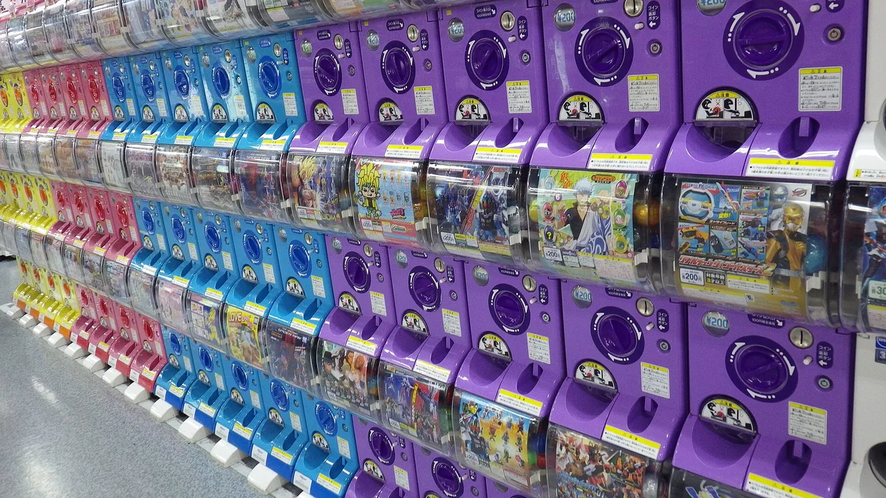

Japan-only anime & character merch: what exists, and how to get it
A surprising share of official anime and character goods never leaves Japan — not because nobody abroad wants them, but because of how they're sold: web shops that only ship domestically, items that only exist inside one physical store, and lottery formats built around Japan's domestic market. This guide maps the main categories of Japan-exclusive anime merch, then covers the two honest routes to it: buying in person while you travel, or using a proxy buying service from overseas.

Why "Japan-only" exists at all
Three distribution habits create most of it. First, domestic-only e-commerce: many official Japanese web stores ship only to Japanese addresses and often require Japanese payment methods, even when an international version of the brand exists with a smaller lineup. Second, place-limited retail: some goods are sold only inside a specific store, museum, theme park or pilgrimage town — the location is part of the product. Third, lottery and capsule formats: Ichiban Kuji draws and gachapon machines are built around domestic mechanics — store counters, and official online versions that ship within Japan only — so there's usually no overseas checkout even when an online version exists. None of this is a conspiracy against overseas fans; it's just how the domestic market grew up. But it means the fix is different for each category, which is why it helps to know which type you're chasing.
The main categories, at a glance
| Category | How it's sold in Japan | Realistic route from overseas |
|---|---|---|
| P-Bandai (Premium Bandai) web exclusives | Official Bandai web store; many items are made-to-order and Japan-store only | Check overseas P-Bandai sites first; otherwise proxy order or secondary market |
| Pokémon Center Japan exclusives | Physical stores across Japan; the Japanese online store ships domestically only | Buy in person, have a proxy order the Japanese online store, or secondary market via proxy |
| Ichiban Kuji (lottery prizes) | Ticket lottery at convenience stores, bookstores and hobby shops, plus an official online version (ships within Japan) | Official kuji in some overseas markets, specialist kuji shops abroad, or individual prizes on the secondary market via proxy |
| Gachapon (capsule toys) | Machines on location; some series are region- or venue-limited | Full sets and singles on the secondary market via proxy |
| Store bonuses (tokuten) | Purchase bonuses at chains like Animate or Jump Shop, tied to campaigns | Secondary market via proxy, usually after the campaign ends |
| Site-exclusive goods | Sold only at a museum, park, station or pilgrimage town | Buy on location while travelling; secondary market otherwise |
P-Bandai web exclusives — the made-to-order tier
Premium Bandai is Bandai's official web store for items that never hit ordinary shelves: web-exclusive model kits, figures and character goods, often sold as time-limited pre-orders. The important nuance for the "how to buy from P-Bandai overseas" question: Bandai runs overseas P-Bandai storefronts too, and part of the lineup does get an international release — so not everything on the Japanese site is actually Japan-only. Check the official overseas stores for your region first; only reach for a proxy when the item genuinely isn't offered there.
✔ Official quality control · made-to-order items you won't find in shops at all
✘ The Japanese store ships domestically · pre-order windows close for good, and missed windows mean secondary-market pricing
Pokémon Center Japan exclusives — store and region flavour
Japan's Pokémon Center stores carry lineups that differ from the official online stores overseas, including goods tied to specific store locations or regional campaigns. The Japanese Pokémon Center online store ships to domestic addresses only, so a foreign card and a foreign address won't get you through checkout. For current items the cleanest routes are buying in person or having a proxy order the Japanese online store on your behalf (proxies exist precisely for domestic-only web shops); for past or store-limited items, the secondary market through a proxy is usually the only door left.
✔ Deep, rotating lineup with genuine Japan-exclusive designs · stores are destinations in themselves
✘ Domestic-only online shipping · popular releases sell out fast, and resale prices climb accordingly
Ichiban Kuji — the lottery built for the domestic counter
Ichiban Kuji is a "no-losers" ticket lottery: you pay per draw at a convenience store, bookstore or hobby shop and every ticket wins a prize, with the big figures at the top of the prize table. Two nuances before you assume it's completely out of reach. There is an official Ichiban Kuji ONLINE where you draw on screen — but it ships prizes within Japan, so it doesn't solve the overseas problem by itself. And Bandai Spirits runs official Ichiban Kuji in a dozen overseas markets (Taiwan, Korea, several Southeast Asian countries, the UK, Spain and Mexico among them), so depending on where you live and which series you chase, a draw may exist closer than you think — check the official site's overseas page. What generic proxies can't do is stand at a Lawson counter (or log into the domestic online kuji) and draw for you; a few specialist shops abroad sell draws for select series, and otherwise overseas collectors buy the specific prize they want on Mercari or Yahoo! Auctions after the lottery runs, via a proxy. You skip the gamble, but you pay the market rate for popular prizes.
✔ Every ticket wins something · top prizes are often genuinely nice figures for a lottery format · official kuji now run in some overseas markets
✘ In-store and official online draws are Japan-domestic · general proxies don't draw tickets for you · buying a specific prize second-hand usually costs more than a lucky ticket would have
Gachapon — capsule toys, sometimes tied to a place
Capsule toy machines are everywhere in Japan, and while many series are national, some are regional or venue-limited — sold only at one attraction, station or area. Bandai Namco does run an official Gashapon Online shop where you spin on screen, but like most domestic e-commerce it ships within Japan — from overseas there's no official way to turn the handle. The overseas workaround is the same as kuji: sellers list singles and full sets on Japanese marketplaces, and a proxy forwards them. Full curated sets cost more than feeding coins yourself, but you also skip the duplicates.
✔ Cheap and fun on location · huge variety, including region-limited series
✘ No official overseas purchase route (the online shop ships within Japan) · complete sets on the secondary market carry a convenience premium
Store bonuses & site-exclusive goods — the hardest tier
Chains like Animate and Jump Shop run purchase-bonus campaigns (tokuten) — small extras like illustration cards handed out when you buy a title at that chain during a window. Museums, theme parks and anime pilgrimage towns likewise sell goods only at the venue. These are the most genuinely Japan-locked category in this guide: the bonus or the venue is the point. After campaigns end, tokuten circulate on the secondary market individually, which is where proxies come back in — but condition and authenticity checking matters more here than anywhere else.
✔ The rarest, most collectible tier · often free with a purchase if you're in Japan at the right time
✘ Time- and place-locked by design · secondary-market listings for popular tokuten can exceed the price of the item they came with
Route 1: buy it in person (and make a trip of it)
If a Japan trip is on your horizon, the place-limited tier stops being a problem and becomes an itinerary. Anime tourism in Japan is well developed enough that you can chain limited-goods stops with the sights themselves:
- Pilgrimage towns — many locations from famous series sell goods you won't find elsewhere. Start with our anime pilgrimage guide for how seichi junrei works and where to go.
- Character manholes — dozens of towns have installed character manhole covers, and the surrounding shops often carry local-only merch. See the character manhole guide.
- Pokéfuta — Pokémon manhole covers now span the country, and towns near them frequently stock regional Pokémon goods. Our Pokéfuta 47-prefecture guide maps them.
In-person buying is also the only way to draw an Ichiban Kuji ticket at the counter or turn a gachapon handle with your own hands — which, if you ask most collectors, is half the fun.
Route 2: buy it from overseas with a proxy service
For everything that's sold online inside Japan — marketplace listings of kuji prizes, gacha sets, sold-out Pokémon Center items, tokuten, and Japan-store P-Bandai stock on resale — a proxy buying service is the standard route. The model is simple:
- You find the item on a Japanese site or marketplace (Mercari, Yahoo! Auctions, Rakuten, specialist shops).
- The proxy buys it on your behalf in Japan, in yen, using its Japanese address and payment.
- It receives the parcel at its warehouse, where you can combine several items into one shipment.
- It ships internationally by the courier you choose.
You pay the item price plus service fees and shipping, so proxies make the most sense for things you genuinely can't buy at home. The two services most overseas collectors start with:
Fees, couriers and which service wins for which kind of order are a topic of their own — we compare them properly in our Buyee vs ZenMarket proxy guide.
Honest caveats before you order
- Not everything can be forwarded. Proxies and carriers maintain prohibited and restricted categories (aerosols, some batteries, and shop-specific restrictions among them). Check your proxy's prohibited-items list before assuming an item will ship.
- General proxies don't enter lotteries for you. In-store kuji draws and application-lottery sales can't be entered through a general-purpose proxy as a rule. Official kuji exist in some overseas markets and a few specialist shops abroad sell draws for select series; otherwise the overseas route is the secondary market — which means paying whatever the market thinks the prize is worth.
- "Japan-only" isn't always true. P-Bandai runs overseas storefronts, and the Pokémon Company operates official online stores outside Japan with their own lineups. Check the official store for your region before paying proxy fees for something you could have ordered directly. For exact availability, check the official store.
- Fees stack. Service fee, domestic shipping, storage, international shipping and possibly import duties all sit on top of the item price. A cheap capsule toy can end up costing several times its capsule price by the time it lands on your doorstep.
- Condition varies on the secondary market. Kuji prizes and tokuten are usually opened or handled. Read listings carefully and use sellers' photos, not the catalogue image.
Limited goods cluster around the places anime fans travel to anyway. Start with our anime pilgrimage guide → and the Pokéfuta 47-prefecture guide →
Common questions
Q. What anime merch is actually Japan-only?
A. The most reliably Japan-locked categories are place-limited goods (store, museum, park and pilgrimage-town exclusives), in-store lottery formats like Ichiban Kuji, regional gachapon series, purchase bonuses (tokuten), and items on Japanese web stores that only ship domestically. Individual products vary, so check the official store for your region before assuming something is unavailable.
Q. How do I buy from P-Bandai from overseas?
A. First check Bandai's official overseas P-Bandai storefronts — part of the lineup gets an international release. If an item is only on the Japanese store, a proxy buying service with a Japanese address can often order it, though some pre-orders carry restrictions; otherwise it's the secondary market after release.
Q. Does the Pokémon Center Japan online store ship internationally?
A. No — it ships to Japanese addresses only. Official Pokémon online stores exist for some other regions with different lineups. For Japan-exclusive items, buy in person during a trip, have a proxy service order the Japanese online store on your behalf, or use the secondary market (Mercari, Yahoo! Auctions) through a proxy.
Q. Can I do Ichiban Kuji from overseas?
A. Not through a general proxy — services like Buyee and ZenMarket don't draw in-store tickets for you, and the official Ichiban Kuji ONLINE ships within Japan. Official kuji do run in a dozen overseas markets (Taiwan, Korea, parts of Southeast Asia, the UK, Spain and Mexico among them), and a few specialist shops abroad sell draws for select series. Otherwise, collectors buy specific prizes on the secondary market via a proxy, usually at a premium for popular prizes.
Q. What's the cheapest way to get Japan-exclusive merch?
A. Buying it in person while travelling, if a trip is realistic — you pay shelf price and skip all forwarding fees. Otherwise, a proxy service is the standard route; compare the full total (item, service fee, domestic and international shipping) across services before ordering.
Q. Will a proxy service ship anything I buy?
A. No. Proxies and their carriers have prohibited and restricted categories, and some shops restrict forwarding. Check the proxy's prohibited-items list before you buy, especially for anything with batteries, aerosols or liquids.
How we choose: we map how these distribution formats actually work and let you pick the route that fits your situation. Some links are affiliate links — we may earn a commission at no extra cost to you, and it never changes what we recommend or the price you pay.